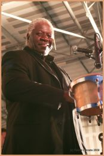
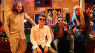
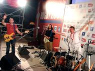
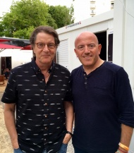

Première partie de Francis Cabrel
Théâtre Olympia Arcachon 11 mars 2016
Rocher de Palmer, Cenon 4 October 2014
Saint Emilion 15 juin 2013
100% Simon & Garfunkel
Festival Philosophia 2010

Sitar & tabla workshops & concerts, Saint Emilion, 30 May 2010 (c) Andrea Schmitz
"Soul Man"

Fêtes du Lac de Cazaux, 13 juillet 2009
Sous la pluie... photos (c) Patrick Lacoste / Instants Figés
Place des Quinconces Bordeaux
Hommage à Simon & Garfunkel

George & Mark dans une séance photo... on avait du mal a se concentrer !
Flower Power au Casino d'Arcachon
Flower Power au Casino d'Arcachon

Jeudi 31 juillet 2008, sur le parvis du Casino... peace, love... et ambiance ! Photos (c) Corinne
Corsica - May 2008

4 jours à Bastia, 2 nuits au Cabaret... le tout inoubliable !
Flower Power at Château Giscours

Soirée événementielle pour la société Bébé 9, 24 septembre 2007 (d'autres photos bientôt en ligne...)
Mark's 40th Birthday Concert (Part 1)
Meet the Band

Mark, Thomas, Léon and Tom, plus guests Jean, Bimbo, Freddy & George
(click on the photo to open the album)

Stade Vélodrome Arcachon, 27 juillet 2016. (c) C. Visticot & A. Sanchez